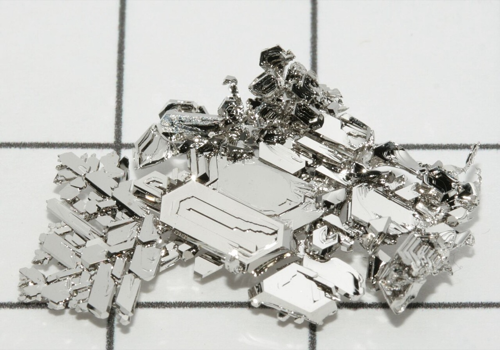
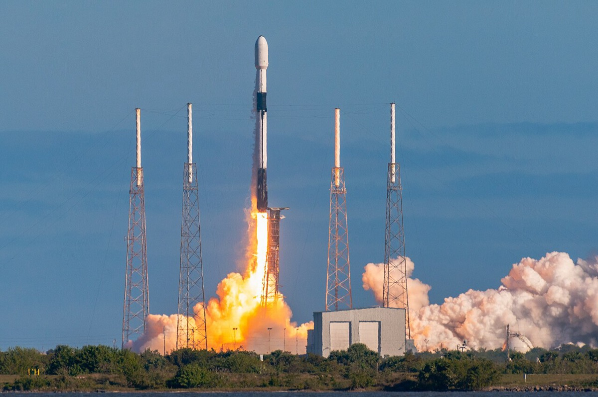
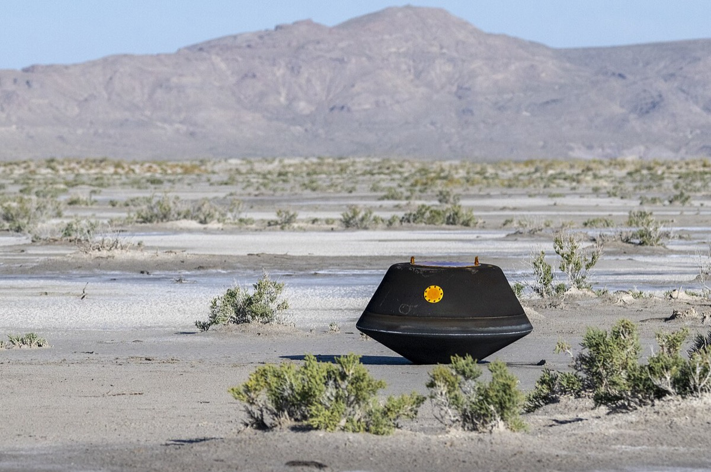
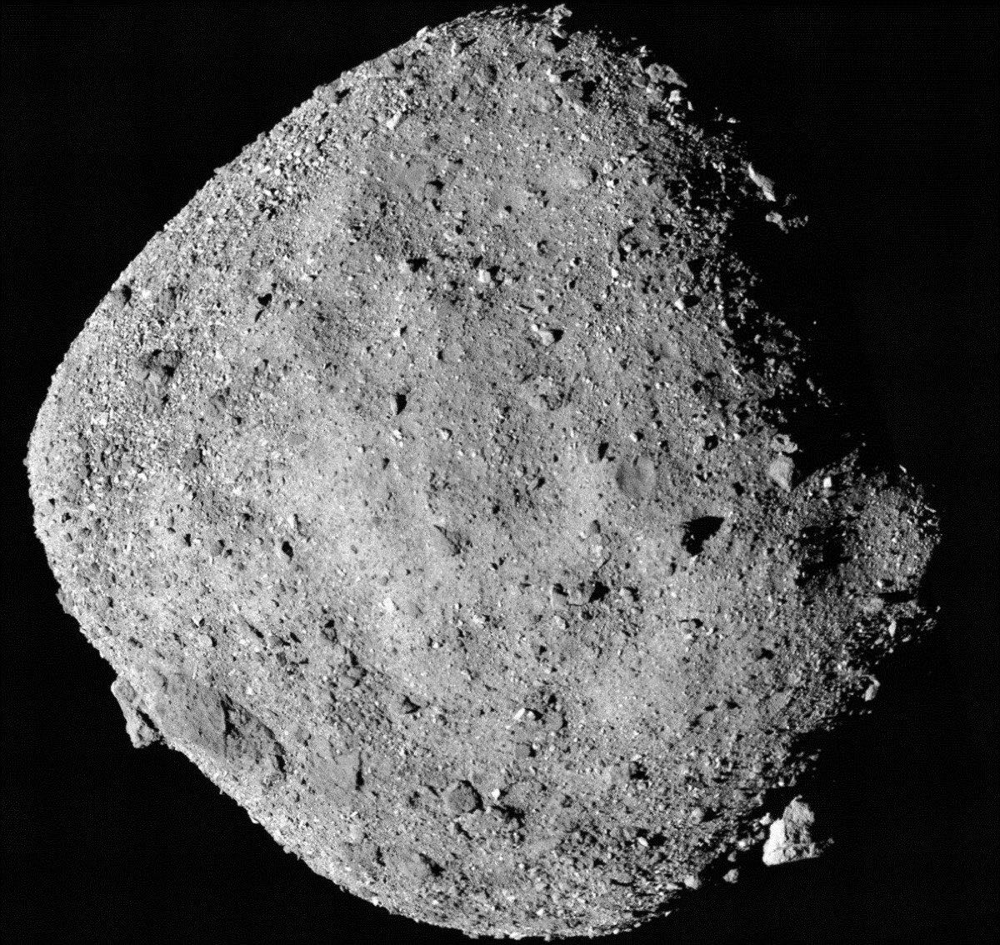
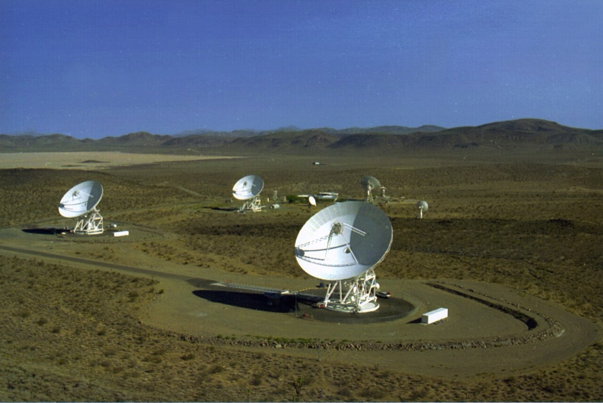
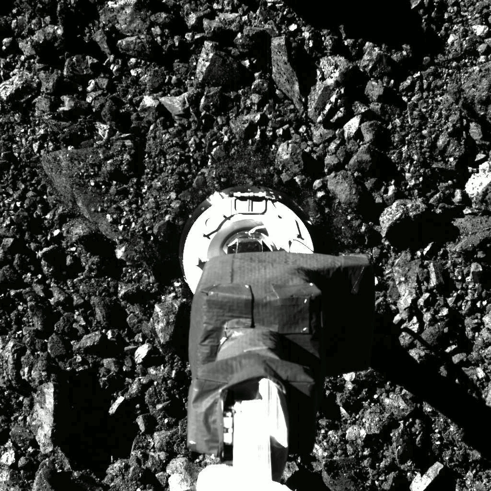
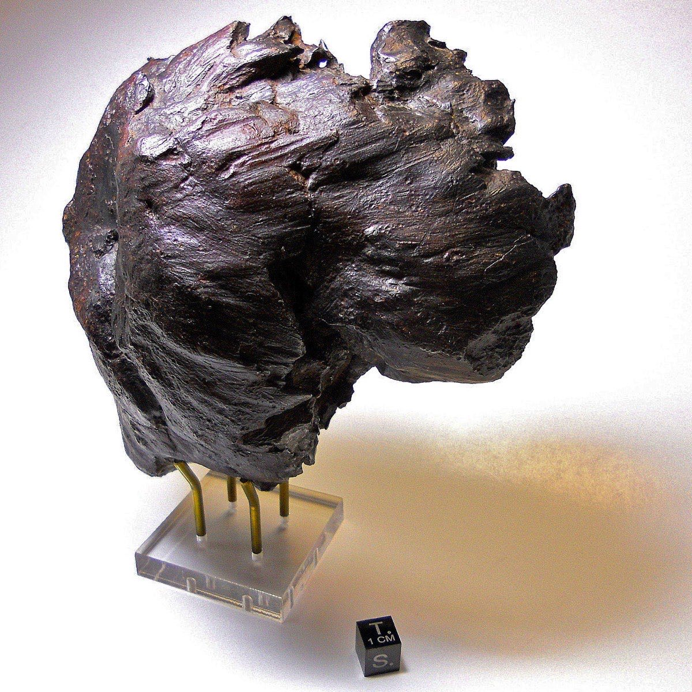
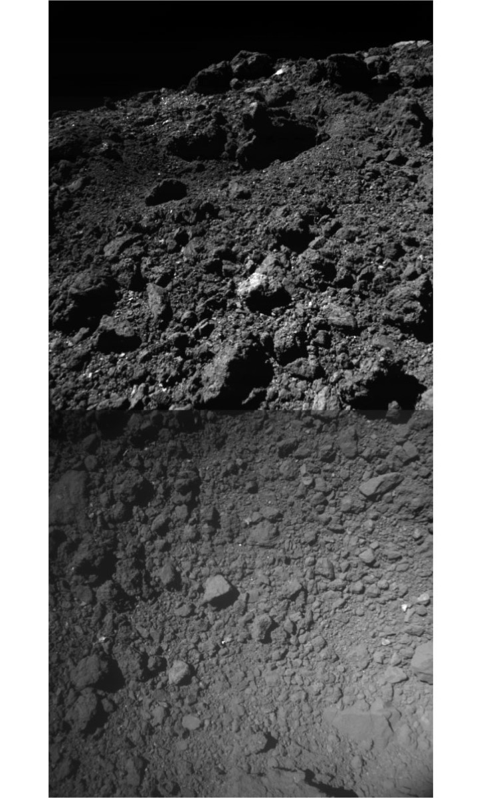
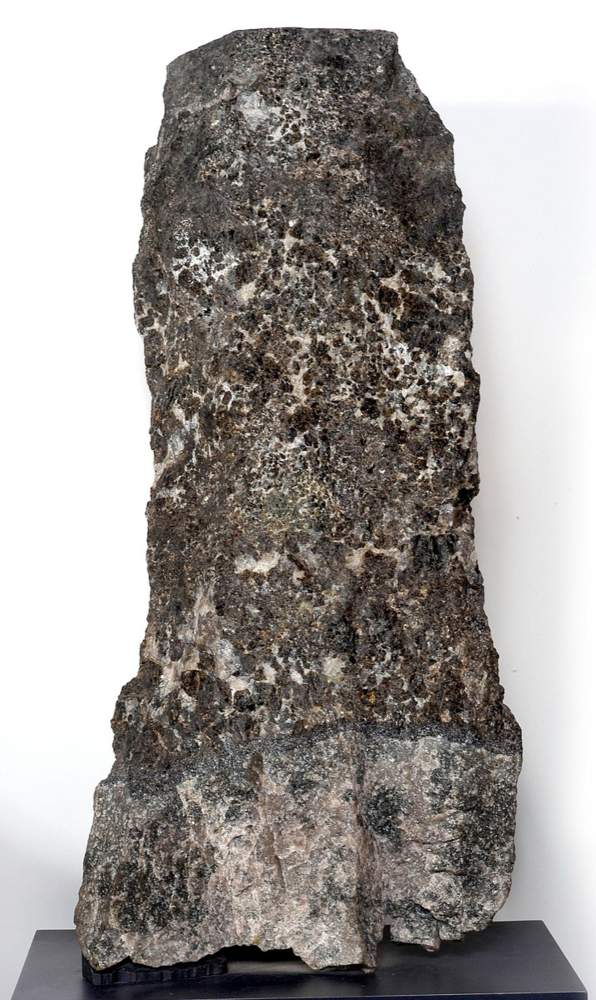
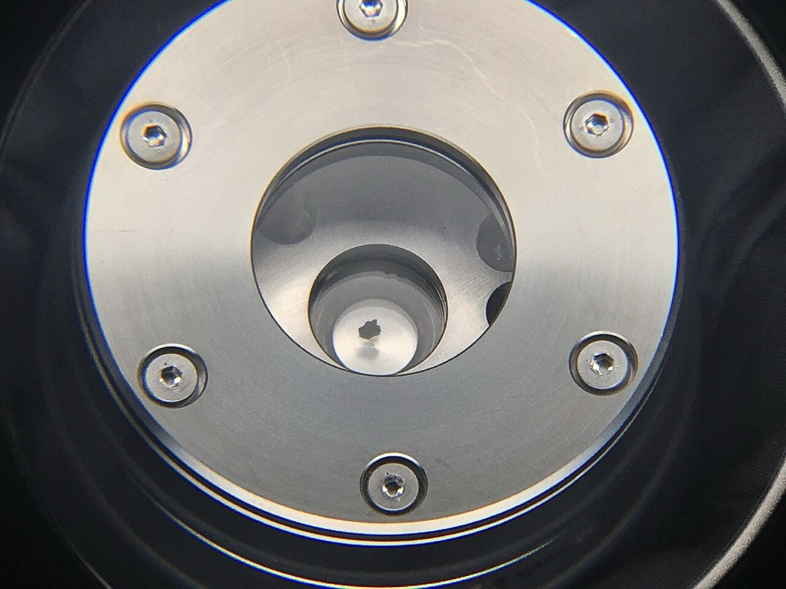

純金属の期待収入は価格×帰還質量×成功率で決まり、品位はこの式の収入側に入らない。 収入側と原料規模の代理では、成功率の半減が必要帰還質量を2倍にする一方、品位を中央値から90パーセンタイルへ上げても必要原料は約62%減にとどまる。費用関数全体の優劣は品位依存費用が非開示のため判定不能である。 Autonomy-1について算術できるのは地上運用費の削減感度であり、成功率改善の一次証拠はまだない。経路が費用削減に限るかも、現時点では判定不能である。
AstroForge公式・USGS・Johnson Matthey・各国法令・NASA/JAXAのミッション報告をもとに作成した。基準日は2026年9月25日。再作成は2026年11月11日である。
読者と判断：宇宙資源スタートアップやPGM供給を評価する立場が次を決められる。収入側の感度は帰還質量×成功率で比較し、品位は原料規模の代理として置く。Autonomy-1は費用削減の感度だけを算術し、成功率改善は一次証拠が出るまで保留する。費用関数全体で品位と成功率のどちらが支配するかも保留する。
分解：物理＝デルタV・通信遅延・再突入熱・品位ppm。お金の流れ＝打上げ・地上局・機上精錬・保険・回収。利得の帰属＝地上PGM鉱山・精錬と宇宙スタートアップ投資家。法＝国内法の抽出物私有と国際レジームの空白。時間＝ミッション列の失敗学習と認証に要する年数。
採否の式は E[R] ＝ 価格 × 帰還質量 × 成功率 − ミッション費用 である。 感度計算として白金を30,543 USD/kg（2024年平均）と置く。ミッション費用を1,000万USDと置くと、成功率1で純Pt約327 kg、成功率0.5で約655 kgが要る。 これは深宇宙投入・帰還・保険を含まない限定的な感度であり、真のNPV分岐ではない。 収入側と原料規模の代理では、成功率半減の影響（必要質量+100%）が品位を中央値から90パーセンタイルへ上げる影響（必要原料約−62%）を上回る。費用関数全体での優劣は、品位依存費用が非開示のため判定不能である。 政府系サンプルリターンはOSIRIS-RExが121.6 g、はやぶさ2が約5 gである。12312
Autonomy-1について算術できるのは地上運用費の削減感度である。成功率改善は判定不能である。 2026年9月21日のAstroForge発表によれば、分離後に地上へ1コマンドも送らない運用を実証する。 公式が地上運用をミッション費用の約1/3と置くため、費用がゼロに近づく場合の感度上限は分岐質量の約33%減である。 一方、Odinの公式デブリーフは地上局不具合に加え太陽電池展開・姿勢・設定問題も挙げる。冗長化と設計改善で成功確率を高めるともしている。 アップリンク切断が成功率を上げるか、経済寄与が費用削減に限るかは、飛行後の一次報告が出るまで判定不能である。45623
「金・PGMが鉄並み」は年間需給の桁では起きない。 世界のPt鉱山生産は2024年推定で17万kgである。 Johnson Mattheyの2025年見通しではPtは約736千トロイオンス（約22.9トン）の供給不足である。 不足を補う供給増でも価格を熱延コイル級まで落とすには足りない。 所有権の国内法は抽出物の私有を認める。対象は米国2015年法・ルクセンブルク2017年法・日本2021年法である。いずれも帰還質量を増やさない。178910
使う定数を先に固定する。読者が同じ式で再計算できる形にする。
| 記号 | 定義 | 採用値 | 出典 |
|---|---|---|---|
| P_Pt | 白金の年平均価格 | 950 USD/トロイオンス（2024） | USGS MCS 20251 |
| m_oz | 1トロイオンスの質量 | 31.1034768 g | 計量定義 |
| p_Pt | 白金のキロ単価 | 950 / 0.0311034768 ＝ 30,543 USD/kg | 筆者換算 |
| C | ミッション総費用（作業仮定） | 1,000万USD | 推定。公式総額は非開示4 |
| r_2026 | SpaceX rideshare公表単価 | 7,000 USD/kg（2026年打上げ、50 kg起算） | NewSpace Market記録11 |
| g | 鉄隕石PGM中央値 | 40.78 ppm | Cannon et al. 202312 |
静的分岐質量は M_be ＝ C / p_Pt である。期待値を入れると M_be(s) ＝ C / (p_Pt × s) になる。sはミッション成功率である。
| 成功率 s | M_be（純Pt） | 中央値品位での原料質量 | 読み方 |
|---|---|---|---|
| 1.0（静的） | 327 kg | 約8,020 トン | 旧稿が置いた下限。失敗を除外 |
| 0.5 | 655 kg | 約16,000 トン | 2回に1回成功する想定 |
| 0.2 | 1,637 kg | 約40,100 トン | 5回に1回 |
| 0.1 | 3,274 kg | 約80,300 トン | 10回に1回 |
| 観測（飛行済み） | — | — | 主目的達成 0/2。sの点推定は0 |
品位と成功率の感度を、同じ仮定の下で比率比較する。純金属収入 E[R]=p×M×s に品位は入らない。品位が動かすのは必要原料質量である。
| 比較 | 操作 | 結果の変化率 | 対象変数 |
|---|---|---|---|
| 成功率ショック | s: 1.0 → 0.5 | 必要純Pt質量 +100%（327→655 kg） | 帰還質量×成功率（収入側） |
| 品位ショック | g: 40.78 → 107.86 ppm | 必要原料質量 約−62%（8,020→3,033 トン） | 原料・機上処理規模（費用側の代理） |
| 地上運用ゼロ（上限） | Cの約1/3を除去 | 必要純Pt質量 約−33%（327→218 kg） | 費用C（公式比率・single-source） |




AstroForgeは2022年創業の小惑星資源スタートアップである。TechCrunchの報道では累計調達は5,600万USDとされる（single-source）。 ミッション列は次の4本である。軌道上精錬実証のBrokkr-1。深宇宙のOdin。小惑星ランデブーのDeepSpace-2。自律実証のAutonomy-1。56
| ミッション | 時期 | 目的 | 結果（as of 2026-09-25） |
|---|---|---|---|
| Brokkr-1 | 2023年4月 | 軌道上での精錬技術デモ（CubeSat） | 通信問題で精錬デモ未達613 |
| Odin | 2025年2月26〜27日打上げ | 近地球小惑星へのフライバイ観測 | 主目的未達。公式は地上局不具合に加え、太陽電池展開・姿勢・設定問題を挙げる5623 |
| DeepSpace-2 | 2026年第4四半期予定 | 惑星重力井戸外での商業ランデブー初。Soloをshadow modeで搭載 | 未飛行414 |
| Autonomy-1 | 2027年初頭予定 | 分離後ゼロ指令。NASA GoddardのCOMPASSを搭載。Stoke Space Nova Pathfinder初号機 | 未飛行46 |
公式説明では、Soloは既存の決定論的・物理ベース飛行ソフトを置き換えないintelligence layerである。 地上運用（アンテナ時間・テレメトリ解析・指令）がミッション費用の約3分の1を占める、というのがAstroForgeの主張である（single-source）。 TechCrunchによると、CEOのMatt Gialichは地上局網を自前で持つ場合の概算を述べた。世界に5基の大型アンテナを置く費用を約2億USDとしている（single-source、推定発言）。45
自律運用が期待分岐質量 M_be=C/(p×s) を動かす経路は2つある。分子のCを下げるか、分母のsを上げるかである。公開事実でどちらが確認できるかを分ける。
| 経路 | 仕組み | 公開事実との整合 | 感度の上限（仮定C=1,000万USD） |
|---|---|---|---|
| 費用削減 | アップリンクと地上オペを減らし、地上運用費（公称約1/3）を削る | Autonomy-1の設計目的と一致する。感度は算術できる | Cが2/3になれば M_be は327→218 kg（約−33%） |
| 成功率改善 | 機上判断・冗長化・設計改善でsを上げる | Odin公式は地上局に加え太陽電池・姿勢・設定を挙げ、設計改善で成功確率を高めると主張。Autonomy-1単体の寄与は未分離 | s改善の一次証拠なし。感度は大きいが経路は判定不能 |


したがって、現時点で算術できるのは地上運用費を削る分子Cの経路である。 成功率sの経路は一次証拠がなく、Odin公式が複合原因と設計改善による成功率向上を主張しているため、「費用削減に限る」とも言えない。 契約獲得確率の上昇は、費用削減または成功率改善のいずれかが飛行後に開示されてからでないと、独立した経路として置けない。
AstroForgeの公開メッセージは、金属に富む小惑星の白金族金属（PGM）である。 NASAのPsycheミッションは主帯の金属富化小惑星(16) Psycheを探査中で、到着は2029年8月頃、金属体積比は近年の推定で30〜60%の範囲にある。 ただしPsyche自体のPGM品位の実測値は未取得である。商業採掘の品位仮説は、鉄隕石の分析に依存する。1516
Cannon, Gialich, Acain（2023）は鉄隕石の統計サンプリングで総PGM品位の分布を出し、中央値（50パーセンタイル）を40.78 ppm、90パーセンタイルを107.86 ppmとした。 上限付近としてIIAB Avceの約230 ppmを示し、Kargel（1994）がIrから他元素をコンドライト比で外挿して得た「300 ppm超」は実測と整合しない、と結論している。 同論文の共著者にAstroForgeのGialichとAcainが名を連ねる点は利害関係として明記する。12
| 指標 | 値 | 時点・注 |
|---|---|---|
| 鉄隕石PGM・10パーセンタイル | 14.70 ppm | Cannon et al. 2023 |
| 鉄隕石PGM・中央値 | 40.78 ppm | 同上。以降の計算の基準 |
| 鉄隕石PGM・90パーセンタイル | 107.86 ppm | 同上 |
| 上限付近の実測例 | 約230 ppm | IIAB Avce（論文の整理） |
| 地上鉱床の中央値（比較） | 3.86 ppm | 同論文Table 2 |
| (16) Psycheの金属体積比 | 30〜60% | NASA公開説明。PGM品位はN/A |


経路は少なくとも4段に分かれる。(1)近地球小惑星への到達。(2)表面または内部からの採取・選鉱。(3)機上精錬または高品位濃縮。(4)地球への再突入・回収。 政府ミッションは(1)とごく少量の(2)(4)までであり、(3)の商業スケールは未実証である。 品位が中央値から90パーセンタイルへ上がれば、必要な原料質量は約62%減る。 収入側・原料規模の代理では、この変化は成功率半減（必要純金属+100%）より小さい。 ただし選鉱・精錬の品位依存費用と歩留まりが非開示であるため、費用関数全体でどちらが支配するかは判定不能である。判定に必要なデータは、品位別の選鉱費・精錬費・歩留まり、およびそれらと成功率・帰還質量の費用弾性である。
価格が「鉄並み」になる条件を、年間需給の実数から先に置く。
| 指標 | 数量 | 時点 | 出典 |
|---|---|---|---|
| 世界Pt鉱山生産 | 170,000 kg | 2024年推定 | USGS1 |
| 世界Pd鉱山生産 | 190,000 kg | 2024年推定 | USGS1 |
| うち南アフリカPt | 120,000 kg | 2024年推定 | USGS1 |
| うちロシアPd | 75,000 kg | 2024年推定 | USGS1 |
| ジンバブエPt＋Pd | 19,000 + 15,000 kg | 2024年推定 | USGS1 |
| JM Pt総供給（一次＋二次） | 7,095 千トロイオンス ≈ 221 トン | 2024 | JM 2025報告7 |
| JM Pt総需要 | 7,869 千トロイオンス ≈ 245 トン | 2024 | JM7 |
| JM Pt需給ギャップ（2025見通し） | 不足736 千トロイオンス ≈ 22.9 トン | 2025見通し | JM7 |
| 熱延コイル（インドネシアFOB） | 523 USD/トン ≈ 0.52 USD/kg | 2026-09-24 | SMM（single-source）17 |
Ptキロ単価30,543 USDを熱延コイル0.52 USD/kgまで落とすには、約58,700倍の価格下落が要る。 これは年間23トンの不足を補う程度の供給増では起きない。 不足を消すだけなら、純Pt換算でおおむね20〜25トン/年の追加で足りる。 価格を半減させる条件は単一のトン数では特定できない。在庫・投資需要・自動車触媒需要の弾性も絡む。少なくとも年間鉱山生産の10%（Ptなら約17トン）級の持続的余剰があれば、2024年に観測されたような2桁の価格下落（Pd年平均は前年比−27%）を再び起こしうる。17
その水準でも「鉄並み」には届かない。鉄並みは、PGMが構造材として鉄と代替される世界であり、触媒・電子・化学向けの希少金属市場としては別物である。 金属価格のマクロ経路の整理は 金利とマクロ価格 に譲る。


金属が地球へ戻らない段階では、利得の帰属は次のように分かれる。
| 主体 | 得をする条件 | 現状（2026-09-25） |
|---|---|---|
| AstroForge投資家 | 地上運用費の削減が開示され、追加調達またはEXITが成立する。または成功率改善の一次報告が出る | Autonomy-1は未飛行。費用削減感度は算術可。成功率改善は判定不能 |
| 深宇宙通信・地上局事業者 | ミッション数が増え、アンテナ時間が売れる | AstroForgeは地上依存を減らす方向へ転換 |
| 地上PGM鉱山（南ア・ロシア・ジンバブエ） | 宇宙供給が年間十トン級に達しない限り、価格ショックを受けない | 宇宙由来の商業供給は0 |
| 地上精錬・触媒メーカー | 原料価格が下がれば調達コストは下がる。鉱山閉山が続けば処理量は減る | 二次供給（廃触媒）が一次の数割を占める7 |
| 先行2社の債権者・買収側 | 資産・知財の転用 | Planetary Resourcesは2018年にConsenSysが資産買収。Deep Space Industriesは2019年にBradford Spaceが買収1819 |
2010年代前半の小惑星採掘ブームを代表したPlanetary ResourcesとDeep Space Industriesは、いずれも採掘そのものの失敗ではなく、資金と事業焦点の崩壊で終わった。 両社とも軌道上のハードは持った。採掘から収益までの距離が長く、長期ビジョンだけでは次のラウンドが埋まらなかった。 法制度はむしろ整備が進んだ時期であり、死因の第1因子ではない。1819
南アフリカは世界Pt鉱山の約71%（120/170）、ロシアは世界Pd鉱山の約39%（75/190）を占める（2024年推定）。 USGSは2024年の南アフリカ減産要因として深部採掘コスト・労働争議・電力供給の乱れを挙げる。ロシアでは災害・品位低下・紛争関連・製錬所の計画停止を挙げる。 宇宙由来の数十トン級余剰が加われば、高コスト坑の閉山と外貨収入の縮小が先に来るが、その供給は本稿の分岐質量と成功率の条件を満たした後の話である。1 寡占の重心が採掘ではなく加工立地にある、という一般構造は 素材と資源の寡占構造 と同じである。
外層空間条約（1967年）は天体の国家による領有を禁じるが、抽出した資源の私有については各国が国内法で正面から認め始めている。
| 法 | 成立 | コア条文の趣旨 | 主権との関係 |
|---|---|---|---|
| 米国Commercial Space Launch Competitiveness Act（Title IV） | 2015年 | 米国市民が商業回収した小惑星資源・宇宙資源について、所有・輸送・使用・販売の権利を認める（51 U.S.C. §51303） | 領有権の主張は明示的に否認 |
| ルクセンブルク「宇宙資源の探査・利用に関する法律」 | 2017年7月20日 | 「Space resources are capable of being owned.」大臣の書面許可が必要 | 許可制で監督。会社形態要件あり |
| 日本「宇宙資源の探査及び開発に関する事業活動の促進に関する法律」（令和3年法律第83号） | 2021年 | 許可に係る事業活動計画に従って採掘等した宇宙資源は、所有の意思をもって占有することで所有権を取得（第5条） | 諸条約の実施を目的に明記。他国の探査・利用の自由を害しない旨 |
現状の含意は次である。国内法上、抽出物の私有は可能になった。 しかし国際社会全体で調和した登記・優先権・紛争解決の制度は未完成であり、日本法も附則で「抜本的な見直しを含め検討」と書く。 先行2社が倒れた主因が法の欠如ではなかったことと合わせると、今のボトルネックは所有権の文言ではなく、帰還質量とミッション成功率である。
主張の検証で残った論点だけを挙げる。調べれば分かる事実はここに置かない。
| # | 問い | 手がかり |
|---|---|---|
| 1 | 品位別の選鉱費・精錬費・歩留まり、および成功率・帰還質量との費用弾性はいくらか。 | 主張1を判定不能に留めている欠落データ。開示されれば感度比較を費用関数全体へ伸ばせる。 |
| 2 | Solo搭載後のミッションで、主目的達成率は飛行済み2機（0/2）より上がるか。上がった場合、寄与はアップリンク切断か太陽電池・姿勢・設定の設計変更か。 | 主張2を判定不能に留めている欠落。達成率が上がれば成功率経路は支持側へ移る。寄与の分解が無ければAutonomy-1単体の効果はなお分離できない。 |
| 3 | 地上運用比率が公式の約1/3から何ポイント下がるか。 | 費用削減経路の実測。本稿の−33%は比率をゼロにした上限である。 |
| 4 | 宇宙由来のPtが年間10トン流入した場合の価格弾性はいくらか。 | 2025年の不足見通しは約22.9トンである。弾性の一次推計は公開モデルが限られる。 |

.jpg){kind=link}
.jpg){kind=link}


_via_Hayabusa2.jpg){kind=link}